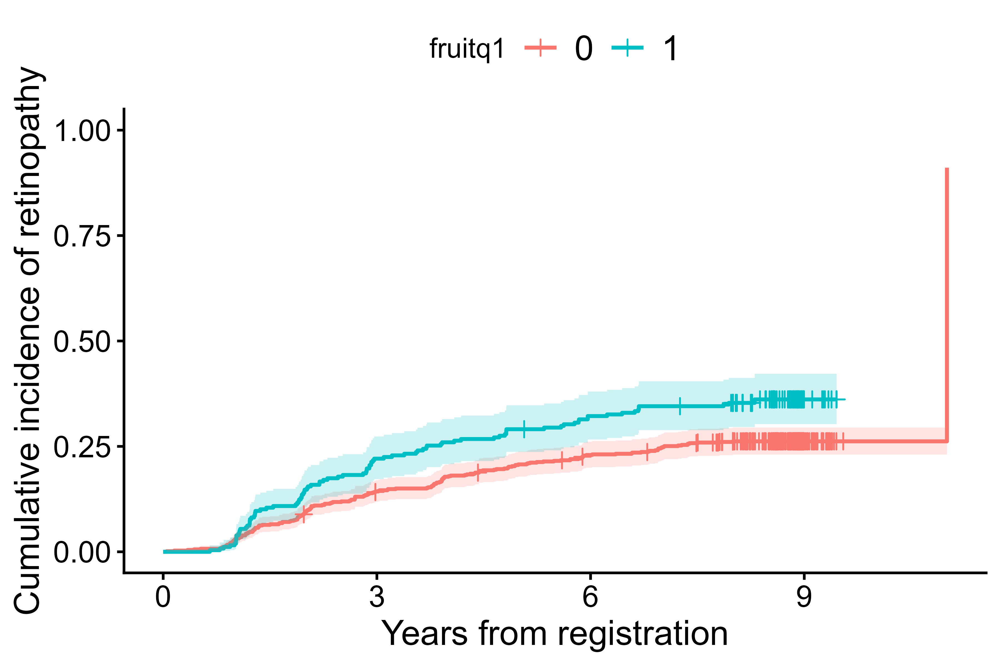

What can cifmodeling do?
cifmodeling brings estimation, testing, regression, visualization, and reporting into a single formula-based workflow for survival and competing-risk data. Start with a cumulative incidence curve; use the same event coding to compare groups, model exposure effects, and prepare publication-ready outputs.
| What you want to do | What cifmodeling provides |
|---|---|
| Estimate and present event probabilities |
cifcurve() with cifplot() or
cifpanel()
|
| Estimate a fixed-time RR, OR, or SHR | Coherent direct CIF regression with
polyreg()
|
| Test differences over follow-up | Gray, augmented-score, and multiple-direction tests
with ciftest()
|
| Produce analysis tables and reports |
gtsummary integration and
cifreport() when available |
The quick start below uses just two groups and one event. More specialized options are introduced afterward, with links to runnable examples and technical details. You can use the package without reading all nine vignettes.
Quick start: one event, two groups
We use diabetes.complications, an anonymized dataset
from the Japan Diabetes Complications Study. Tanaka et al. (2013)
studied the association between fruit intake and diabetic retinopathy in
this cohort. The variable t gives follow-up time in years,
and epsilon indicates censoring (0), diabetic retinopathy
(1), or a macrovascular complication (2). The binary variable
fruitq1 compares the lowest fruit-intake quartile (Q1) with
the other quartiles (Q2–Q4). Worked
examples creates the same grouping as low_fruit from
fruitq.
Suppose we want to estimate the probability of diabetic retinopathy by each time point in the two groups. If a macrovascular complication occurs first, retinopathy cannot be the first event in this analysis. We therefore use the Aalen–Johansen (AJ) estimator of the cumulative incidence function (CIF), which accounts for competing events instead of treating them as ordinary censoring.
fit_cif <- cifcurve(
Event(t, epsilon) ~ fruitq1,
data = diabetes.complications,
outcome.type = "competing-risk",
code.event1 = 1
)
cifplot(
fit_cif,
type.y = "risk",
label.x = "Years from registration",
label.y = "Cumulative incidence of retinopathy",
add.risktable = FALSE
)
Cumulative incidence of diabetic retinopathy in two fruit-intake groups
Each curve estimates the probability that retinopathy occurs first by a given time. A higher curve indicates greater cumulative incidence; the vertical distance between curves is a difference in estimated probabilities, not a hazard ratio. The plot is descriptive and does not establish a causal effect of fruit intake.
cifcurve() returns a survfit-compatible
object. For a competing-risk outcome, its $surv component
stores one minus the CIF for the event of interest.
Setting type.y = "risk" in cifplot() displays
the CIF itself. To plot both events in separate panels, use
panel.per.event = TRUE (see the Gallery).
From a curve to a statistical question
A curve, a test, and a regression model answer different questions:
| Question | Main function | What it tells you |
|---|---|---|
| What is the probability of an event by time t? | cifcurve() |
An AJ estimate of the CIF and a pointwise confidence interval |
| Do the CIFs differ between groups over follow-up? | ciftest() |
A curve-comparison test, such as Gray’s test |
| What is the exposure effect on risk at eight years? | polyreg() |
A fixed-time RR or OR, with covariate adjustment if specified |
| How can I present the results? |
cifplot(), cifpanel(),
reporting tools |
Plots, tables, and reports |
For example, use the classical Gray test to compare retinopathy CIFs over follow-up. This takes the same formula and data used to estimate the curves:
ciftest(
Event(t, epsilon) ~ fruitq1,
data = diabetes.complications,
outcome.type = "competing-risk",
test = "gray"
)
#>
#> Gray's test
#>
#> Outcome: competing-risk
#> Test: gray
#> FH weights: rho = 0, gamma = 0
#> Analysis strata: pooled
#> Censoring strata: not used by this test
#> Working AJ strata: not used by this test
#> Variance: gray
#>
#> Chi-squared = 8.8786, df = 1, p-value = 0.002885The null hypothesis is that the cause-specific CIFs are equal across
groups. This differs from testing an RR at eight years. For competing
risks, ciftest() defaults to an augmented score
test; test = "gray" requests the classical Gray test.
See Tests of cumulative incidence
functions for other options, including the Ditzhaus quadratic-form
test (test = "ditzhaus") and MaxCombo
(test = "maxcombo" or "m").
To estimate an eight-year risk ratio, use
polyreg(). The exposure is specified separately from the
outcome and the other covariates:
fit_rr <- polyreg(
nuisance.model = Event(t, epsilon) ~ age + sex,
exposure = "fruitq1",
data = diabetes.complications,
code.exposure.ref = 0,
time.point = 8,
outcome.type = "competing-risk",
effect.measure1 = "RR",
effect.measure2 = "RR"
)
summary(fit_rr)Here, age and sex are included in the
nuisance model, and effect.measure1 = "RR" specifies the
effect measure for retinopathy. Both event types are modeled jointly.
The estimated RR describes a model-based association; causal
interpretation requires additional assumptions. This code is not run in
the overview. See Direct polytomous
regression for a runnable example and Worked examples for interpreting RRs and
their confidence intervals.
From results to a report. Once the model is fitted,
you can format its results with gtsummary, or use
cifreport() to produce baseline tables, fixed-time
estimates, curve comparisons, and figures in a single analysis. See Reporting results for a runnable,
two-outcome report and Word/HTML/PDF export. cifreport()
requires a version that exports this function.
Choose a learning path
If you want to use the package right away, start with the worked analysis. If you want to examine model assumptions, test statistics, or variance estimators, start with the methods vignettes.
| Your goal | Suggested route |
|---|---|
| Learn by doing | Worked examples (v5) → Gallery (v6) → Reporting results (v7) |
| Understand the methods | Direct regression (v2) → CIF tests (v3) → Computational formulas (v4) |
| Find a technical answer | Data conventions and implementation (v8) → Function reference (v9) |
You do not need to read the vignettes in numerical order. In particular, Worked examples combines CIF estimation, curve comparison, fixed-time RRs, and a composite endpoint in one analysis.
Main functions at a glance
| Function | Main purpose | Learn more |
|---|---|---|
cifcurve() |
KM survival or AJ cumulative incidence, SEs, and pointwise CIs; supports fixed case weights | Formulas, Examples |
ciftest() |
Log-rank, Gray, score, augmented score, and multiple-direction tests | Tests |
polyreg() |
Joint direct modeling of competing-event CIFs; RR, OR, or SHR effect scales | Regression |
cifplot() / cifpanel()
|
Curves, risk tables, event markers, and multi-panel plots | Gallery |
cifflowchart() |
Descriptive flowchart of analysis groups, exclusions, and outcome status |
Function reference or
?cifflowchart
|
summary() /
gtsummary::tbl_survfit()
|
Extract KM/AJ estimates at specified times and present curve summaries as tables | Reporting |
generics::tidy() /
gtsummary::tbl_regression()
|
Extract test or regression results and prepare event-specific regression tables | Reporting |
cifreport() |
Automated Word, HTML, or PDF analysis report, when available in the installed version | Reporting |
When choosing a function, keep three distinctions in mind:
- Cumulative incidence versus survival. Without competing events, KM estimates survival. With competing events, AJ estimates the probability of each event occurring first. Define the outcome accordingly.
- Comparison over follow-up versus at a fixed time. A curve-comparison test and an eight-year RR answer different questions; neither replaces the other.
-
Direct regression versus hazard regression.
Fine–Gray regression models the subdistribution hazard.
polyreg()directly models fixed-time RRs or ORs using a joint probability model for competing events. It also supports SHR scales and models with time-constant effect parameters; see Direct polytomous regression.
Where cifmodeling fits among R packages
cifmodeling complements established R packages. survival provides KM and Cox regression, cmprsk provides CIF estimation, classical Gray tests, and Fine–Gray regression, mets provides related competing-risk regression methods, and ggsurvfit focuses on plotting. cifmodeling brings selected estimation, testing, regression, plotting, and reporting functions together under one interface.
| Analysis task | cifmodeling | Other established options |
|---|---|---|
| KM/AJ estimation and curves |
cifcurve(), cifplot()
|
survival::survfit(),
ggsurvfit
|
| Classical Gray test | ciftest(test = "gray") |
cmprsk::cuminc() |
| Fine–Gray regression | Not a regression function in cifmodeling |
cmprsk::crr(),
survival::finegray() with coxph()
|
| Direct CIF regression | polyreg() |
mets::cifreg() / binreg()
provide related, but distinct, methods |
| Reports and tables |
cifreport() and reporting adapters |
gtsummary, modelsummary
|
Practical notes before analyzing your data
Check event codes and follow-up. In these examples,
0 denotes censoring, 1 retinopathy, and 2 a competing event. Other
datasets may use different codes; specify them explicitly when needed.
Fixed-time competing-risk models fitted with polyreg()
require both event types to be observed by the evaluation time. See Data conventions and implementation
details.
Check what the confidence intervals cover.
cifcurve() returns pointwise intervals, not simultaneous
confidence bands. If you supply externally estimated propensity-score
weights, its fixed-weight influence-function variance does not account
for uncertainty in estimating those weights. Deng and Wang (2025) derive
influence functions for estimators that account for propensity-score
estimation. See Computational formulas
for the fixed-weight formulas.
Distinguish association from causation. Differences between the observed fruit-intake groups are not automatically causal effects. Interpreting adjusted or weighted estimates causally requires appropriate study-design and identification assumptions.
Installation and reproducibility
Install the CRAN release with:
install.packages("cifmodeling")The GitHub development version may include features not yet available on CRAN:
# Optional: install the development version
# install.packages("remotes")
remotes::install_github("gestimation/cifmodeling")For example, cifreport() is available in the GitHub
development source but was not exported in CRAN version 1.2.4. Check
your installation with:
packageVersion("cifmodeling")
"cifreport" %in% getNamespaceExports("cifmodeling")For reproducibility, record the package version, event codes, follow-up horizon, model specification, and inference settings. The package includes numerical and interface tests, but you should still verify your analyses against the installed version.
Related learning resources
For a broader, informal introduction to study design, survival analysis, and statistical inference, see the Coffee and Research – Story and Quiz series.
References
- Deng Y, Wang R. Adjusted Nelson–Aalen estimators by inverse treatment probability weighting with an estimated propensity score. Statistics in Medicine. 2025;44(10–12):e70085. doi:10.1002/sim.70085
- Tanaka S, Scheike TH. Estimating effects on cumulative incidence probabilities by direct polytomous regression and polytomous log-odds product. Biometrics. 2026;82(3):ujag160. doi:10.1093/biomtc/ujag160
- Tanaka S, Yoshimura Y, Kawasaki R, Kamada C, Tanaka S, Horikawa C, Ohashi Y, Araki A, Ito H, Akanuma Y, Yamada N, Yamashita H, Sone H, for the Japan Diabetes Complications Study Group. Fruit intake and incident diabetic retinopathy with type 2 diabetes. Epidemiology. 2013;24(2):204–211. doi:10.1097/EDE.0b013e318281725e
- Xie J, Liu C. Adjusted Kaplan–Meier estimator and log-rank test with inverse probability of treatment weighting for survival data. Statistics in Medicine. 2005;24(20):3089–3110. doi:10.1002/sim.2174